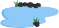

Healthy frogs population are a good indication of a healthy environment

They tells us much about the environment in the forest. They are an important part of the ecosystem, they eat and is eaten
They control mosquitos and algae
and they are food for birds and fishes